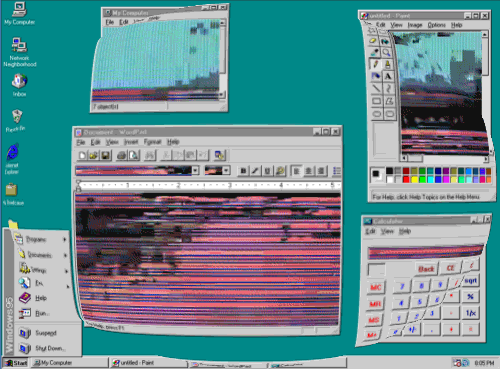
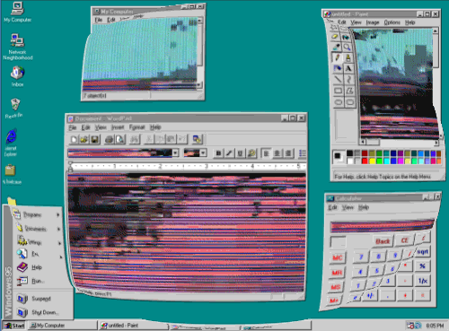
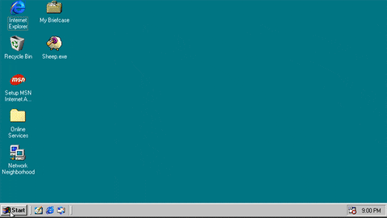
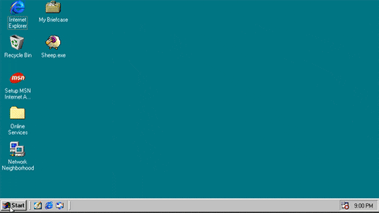

Windows 3.0, 3.1 y 3.11 (1990)
Windows 3.0, el primer gran éxito de Microsoft, introdujo mejoras como memoria virtual y tarjetas VGA, permitiendo ejecutar más programas simultáneamente. Vendió 10 millones de copias en 18 meses.
La versión 3.1 compitió con IBM OS/2, así como también evolucionó su sistema, aunque enfrentó una demanda de Apple por aspecto similar.

Windows 95 (1995)
Conocido como Chicago en su etapa de desarrollo. Fue un cambio importante tanto en la interfaz como en el funcionamiento interno, contando con funciones como:

- Interfaz renovada con menú Inicio y barra de tareas.
- Multitarea más estable.
- Plug and Play para configuración automática de hardware.
- Nombres de archivo más largos y menos dependencia de DOS.

Windows 98 (1998)
A pesar de sus avances, Windows 98 recibió críticas por su lentitud y falta de fiabilidad en comparación con su predecesor. La situación mejoró con la segunda edición (Windows 98 SE), que solucionó muchos problemas.
Sin embargo, hubo controversia por la integración de Internet Explorer en el diseño del sistema, lo que generó acusaciones de competencia desleal. A pesar de estos desafíos, Windows 98 finalmente se convirtió en un sistema operativo apreciado en todo el mundo.

